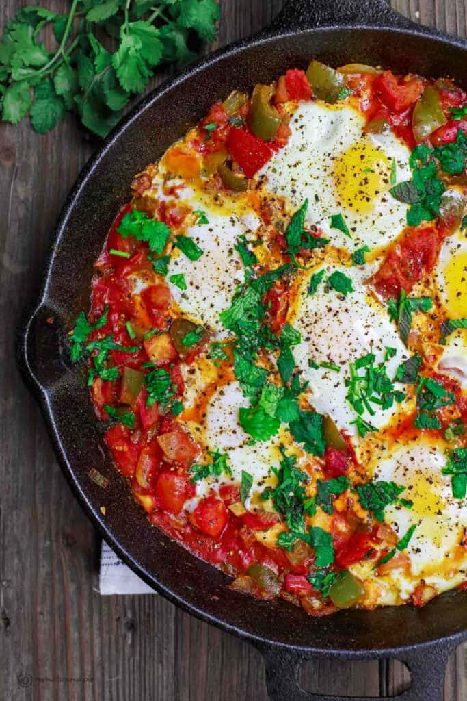

Shakshuka

Shakshuka is a dish which is perfect for breakfast!
Ingredients
- 2 eggs
- 1/2 bell-pepper
- 1/2 onion
- 1 tomato
- 80 ml tomato paste
- Cheese
- Herbs
- Pepper and salt
Steps
- Chop onion in smaller pieces and fry for 1 minute on the pan.
- Add bell-pepper, tomato and tomato-paste to the onion.
- Stew on the middle heat 5-7 minutes, add salt and spices.
- Make two deepenings in the vegetables and add egges.
- Cook until the egg-whites are ready.
- Add cheese and herbs. Your shakshuka is ready!
Home